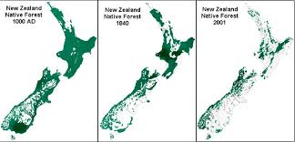

Deforestation in New Zealand
What is deforestation?
Deforestation is the clearing of land that has ahd trees planted on it. Currently and throughout history forests have been ravaged to make space for farming and animals. It is also used for wood which is helpful for fuel,manufacturing and construction.
Deforestation throughout the years.
Deforestation has changed the world massively. Around 2000 years ago, 80% of western europe was full of trees. Right now it is at 34%. In north america,roughly half of the forest in the east side of the continent were chopped down,from 1600 to the 1870s for timber and farming alone. China has lost many forests over the past 4000 years and now there is only 20% of the land with trees. Most of Earths farmland was once forest.
